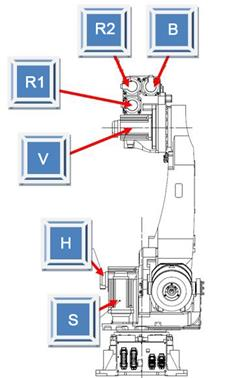

기존 에러코드: E0224 (○축) 엔코더 상태 이상발생
1.1.48.1. 개요
서보보드에서는 모터의 서보제어를 수행하기 위해 엔코더와 시리얼통신을 하여 주기적으로 엔코더 데이터를 수신하는데, 엔코더로부터 수신된 데이터는 정상이나 엔코더 데이터중 엔코더 스스로 내부상태를 감시한 결과가 에러상태(BE)인 경우 에러가 발생합니다.
BE(Battery Error) : 엔코더 주전원 Off시 외부배터리전압이 3.1V이하로 되었던 경우에 발생.
1.1.48.2. 원인 및 점검방법
|
(1) 엔코더 백업용 배터리 전압 확인하십시오.
(2) 엔코더 배터리 결선상태를 점검하십시오.
(3) 모터(엔코더)를 교체 시험하십시오.
|
(1) 엔코더 배터리 전압을 확인하십시오.
엔코더용 배터리는 3.6V 입니다. 이 전압이 3.0V~3.2V 로 저하되면 “W0104 ○축 엔코더Battery 전압저하입니다” 로 표시 됩니다. 이 경고가 발생할 때 엔코더용 배터리를 교환해야 합니다. 엔코더 배터리 교환은 반드시 제어기 전원이 ON되어 있는 상태에서 배터리를 교체해야 합니다. 이 상태에서 정상적인 엔코더 배터리로 교체하면 문제 없이 로봇을 계속 사용할 수 있습니다.
엔코더 배터리 교체시기를 지나서 엔코더용 배터리 전압이 2.5V~3.0V 가 되면 제어기
전원 ON시“E2470 ○축 엔코더 이상 : 엔코더 리셋 필요” 에러가 발생합니다. 이 에러가 발생하면 이미 엔코더의 위치데이터를 잃어버린 상태입니다. 엔코더 배터리를 교체하고 엔코더를 리셋 시킨 후에 축좌표계 수동 조작으로 로봇을 기준자세로 이동하여 해당 축의 엔코더 보정을 재실시 해야 합니다.
그림 1.157 엔코더 배터리 교환 위치
엔코더 리셋은 아래의 메뉴에서 실행합니다.
Ø 시스템
Ø 5. 초기화
Ø 4. 시리얼 엔코더 리셋

(2) 엔코더 배터리 결선 상태를 점검하십시오.
엔코더 배터리 위치부터 모터까지 연결되는 배터리 결선 상태를 확인하십시오.
(3) 모터(엔코더)를 교체 시험하십시오.
에러리셋후 주전원 OFF/ON시 계속 에러가 발생하면 모터(엔코더)교체 시험하십시오. 교체한 후 에러가 발생하지 않으면 서보모터의 불량입니다. 서보 모터를 정상품으로 교체하여 주십시오. 아래 그림은 HS165 로봇의 각 축 모터의 위치를 나타내고 있으며, 다른 로봇은 해당 기구 보수설명서를 참고하여 교체하시기 바랍니다.

그림 1.158 HS165 로봇의 각 축 모터 위치